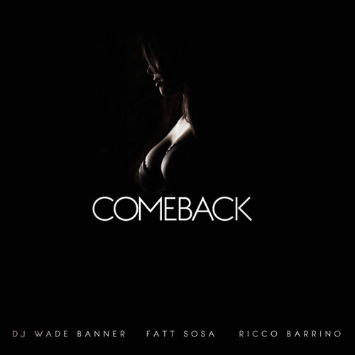

Ricco Barrino
Kassim Vonricco Washington, best known by his stage name Ricco Barrino, is an American R&B singer and songwriter from High Point, North Carolina. He is also the brother of American Idol winner Fantasia Barrino and nephew of The Barrino Brothers. In 2006, he released his debut single "Bubble Gum".
Complete Discography & Tracklists (23)
2016 Ferrari Infidelity EP 🎵 0 Tracks
No tracks registered.
2022 You Let Me Down 🎵 0 Tracks
No tracks registered.
2022 Loose Control 🎵 0 Tracks
No tracks registered.
2022 Toxic 🎵 0 Tracks
No tracks registered.
2025 THE CUSP (CLEAN VERSION) 🎵 5 Tracks
2025 THE CUSP " THE MOVIE" (Soundtrack Version) 🎵 1 Tracks
2025 THE CUSP 🎵 0 Tracks
No tracks registered.